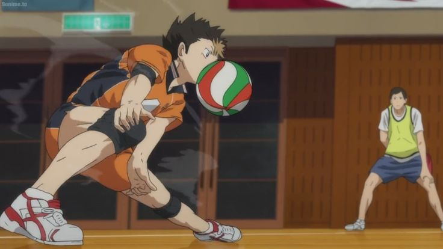
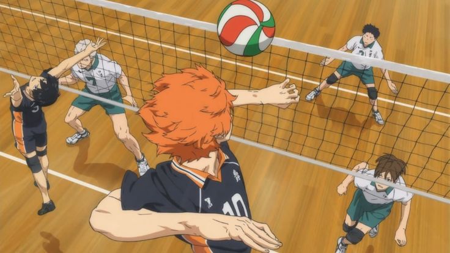
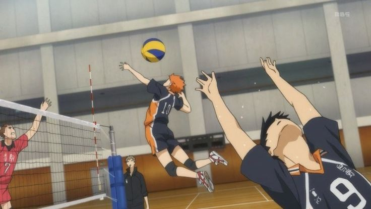
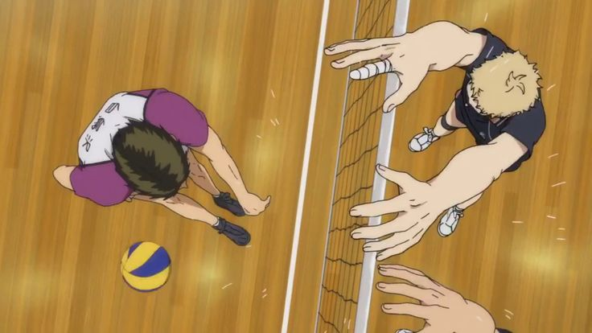

"Saque""Ele é realizado por um jogador posicionado na zona de saque, atrás da linha de fundo da quadra, que golpeia a bola para fazê-la passar por cima da rede em direção ao campo adversário."

"Recepção""É o principal objetivo é controlar a bola e enviá-la de forma precisa para a mão do levantador, permitindo a construção de um ataque eficiente."

"Levantamento""É o segundo toque na bola de uma equipe. O seu objetivo principal é colocar a bola no alto, de forma confortável e precisa. Isso prepara a jogada para que um companheiro possa realizar o ataque e tentar marcar o ponto contra o adversário."

"Ataque""É o fundamento que envia a bola com força em direção à quadra adversária, geralmente sendo o último toque de uma equipe na jogada, com o principal objetivo de marcar o ponto."

"Bloqueio""É o fundamento executado perto da rede para interceptar o ataque do adversário. O objetivo é impedir que a bola passe para o próprio lado, fazê-la cair na quadra rival para marcar ponto ou amortecê-la para facilitar a defesa da equipe."